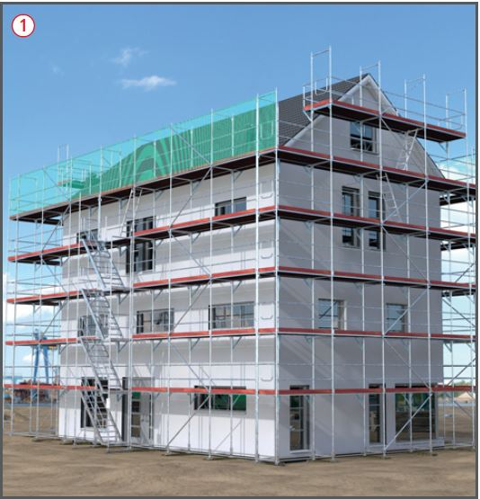

Zugänge zu Gerüsten für Gerüstbauarbeiten und Gerüstnutzung

Gefährdungen
Sind nicht alle Arbeitsplätze auf dem Gerüst über einen sicheren Zugang erreichbar können Absturzunfälle die Folge sein.
Ein nicht fachgerechter Aufbau der Zugänge, z. B. fehlender Seitenschutz an Treppen oder nicht fixierte Leitern können zu Unfällen, z. B. Absturz oder Abrutschen führen.
Allgemeines
Jeder Arbeitsplatz auf dem Gerüst muss über einen sicheren Zugang erreichbar sein.
Zugänge mit Aufzügen, Transportbühnen oder Treppen haben Vorrang vor Leitern .
Der Zugang über innenliegende Leitern ist zulässig
bis zu einer Aufstiegshöhe von 5 m oder
bei Arbeiten an Einfamilienhäusern,
wenn die dabei bestehenden Gefährdungen (z. B. umfangreicher Materialtransport, Schließen von Durchstiegsöffnungen) in der Gefährdungsbeurteilung berücksichtigt werden.
Von Ebenen, die mit Aufzügen, Transportbühnen oder Treppen erschlossen sind, dürfen zusätzlich maximal zwei weitere, nicht umlaufende Gerüstlagen (z. B. Giebelbereich, Staffelgeschoss) mit innenliegenden Leitergängen begangen werden.
Zugänge mindestens alle 50 m vorsehen (TRBS 2121 Teil 1).
Im Gegensatz zu innenliegenden Leitergängen sind Zugänge als Aufzug, Transportbühne oder Treppe besonders zu vergüten (ATV).
Schutzmaßnahmen
Der Auf- und Abbau des Zugangs (Aufzug, Transportbühne, Treppe oder Leiter) erfolgt nach einer speziell für das Vorhaben angefertigten Montageanweisung der Aufzugmontagefirma bzw. des Gerüsterstellers. Grundlage ist die Betriebsanleitung bzw. Aufbau- und Verwendungsanleitung (AuV) des jeweiligen Herstellers. Diese Dokumente müssen bei den Montagearbeiten vor Ort vorhanden sein.
Aufzüge und Transportbühnen sind in der Regel direkt am Bauwerk zu befestigen. Eine Befestigung am Gerüst bedarf immer eines schriftlichen Standsicherheitsnachweises im konkreten Einzelfall.
Die Übergangsstellen vom Gerüst zum Aufzug bzw. zur Transportbühne sind sicher auszubilden, so dass immer automatisch ein Seitenschutz, z. B. Ladestellensicherung vorhanden ist, wenn sich der Aufzug/Transportbühne nicht an der Übergangsstelle befindet.
Der AuV des Gerüstherstellers ist zu entnehmen, ob im Bereich der Treppe zusätzliche Verankerungen am Bauwerk auszuführen sind.
Es darf kein Spalt größer als 2 cm zwischen Gerüstbelag des Gerüstes und dem Zugang vorhanden sein.
Zugänge mit gegenläufigen Treppen sind innen und außen mit einem zweiteiligen Seitenschutz auszubilden.
Zugänge mit gleichlaufenden Treppen sind außen mit einem zweiteiligen Seitenschutz und im Bereich des Gerüstbelages mit einem Umlaufgeländer auszubilden, so dass nur eine Öffnung am Zugang zur Treppe vorhanden ist.
In der Regel erfolgt die Freigabe des Gerüstes durch den Gerüstersteller durch Kennzeichnung am Zugang des Gerüstes. Hat der Treppenzugang eine geringere Lastklasse als das Gerüst, so ist das am Zugang gesondert auszuweisen und zu kennzeichnen. Der Gerüstersteller hat seinen Aufraggeber über diesen Sachverhalt im "Plan für den Gebrauch" zu informieren.
Der Leiterzugang am untersten Gerüstfeld ist so auszubilden, dass die Leiter nicht freihängt, sondern, wie in den anderen Gerüstlagen auf dem Gerüstbelag aufliegt.
Zusätzliche Hinweise für Gerüstbauarbeiten
Beim Auf-, Um- oder Abbau von Gerüsten ist der Zugang über innenliegende Leitern (mind. alle 50 m) zulässig.
Leiterzugänge, die nur für den Gerüstersteller zum Auf-, Um- oder Abbau von Gerüsten bestimmt sind, sollten vor einem Gebrauch durch den Nutzer gesichert werden.
Zusätzliche Hinweise bei Zugängen für Fang- und Dachfanggerüste
Bei der Verwendung von Fang- oder Dachfanggerüsten und einem Treppenzugang kann dieser, wenn nicht die Öffnung für den Treppenausstieg durch Seitenschutz oder eine geschlossene Schutzwand gesichert werden kann, nur bis zu der unter der Fanglage befindlichen Gerüstlage geführt werden. Die Fanglage ist dann über einen Leiterzugang zu erschließen.
Zusätzliche Hinweise für Gerüstnutzung
Wie am Gerüst dürfen auch am Zugang durch den Nutzer keine konstruktiven Änderungen (z. B. Entfernen von Seitenschutz, Fallstecker, Verankerungen) vorgenommen werden.
Gerüste und deren Zugänge nur nach dem "Plan für den Gebrauch" (Kennzeichnung, Warnhinweise) verwenden.
Die Durchstiegsöffnungen beim Leiterzugang sind nach jedem Durchstieg wieder zu schließen.
Zugänge sind von Schnee und Eis zu beräumen und abzustumpfen.
Beschäftigte, die den Aufzug bzw. die Transportbühne bedienen sind vom Unternehmer schriftlich zu beauftragen und er hat sicher zu stellen, dass diese in die Bedienung nachweislich unterwiesen sind.
Prüfungen
Gerüstersteller: Prüfung durch eine "zur Prüfung befähigte Person" nach Fertigstellung und vor Übergabe an den Nutzer, um den ordnungsgemäßen Zustand festzustellen (Nachweis-Prüfprotokoll und Kennzeichnung).
Gerüstnutzer:
Inaugenscheinnahme durch eine "qualifizierte Person" des jeweiligen Nutzers vor dem Gebrauch, um die sichere Funktion und die Mängelfreiheit festzustellen (Nachweis-Checkliste).
Kontrolle ob der "Plan für den Gebrauch" vorhanden und für seinen Anwendungszweck aussagekräftig ist.
Nach längerer Zeit der Nichtnutzung oder nach Naturereignissen (z. B. Stürme, Starkregen) hat der Nutzer vor dem Gebrauch über den Auftraggeber eine außerordentliche Überprüfung durch eine "zur Prüfung befähigte Person" zu veranlassen.